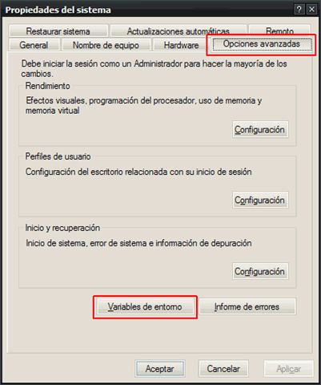
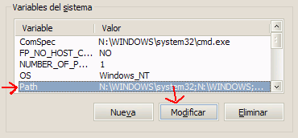
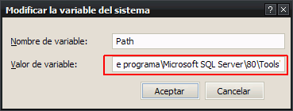

Lanzar aplicaciones desde Ejecutar
Hace un par de semanas/meses instalé nuevamente Launchy. Al poco tiempo (minutos) lo saqué. Me pareció no-muy-de-mi-gusto teniendo las aplicaciones que tenía corriendo en ese momento.
Pocos minutos después, me acordé de que había visto por algún lado hacer lo que hace Launchy (lanzador de aplicaciones) con la ventana de Ejecutar.
Hay que ir a Mi PC > propiedades > Sistema > Opciones avanzadas. Abajo hay un botón que dice Variables de entorno, entramos ahí.

Se abre una ventanita. Abajo, en Variables del Sistema, buscamos
Path y damos click en Modificar

Sale otro Pop Up, y modificamos el valor de la variable. Lo único
que hay que hacer es ir hasta el final, agregar ; (punto y coma)
seguido de la ruta en donde se encuentran los shorcuts/atajos/accesos directos.

Aceptar, aceptar, aceptar. Listo! ahora Win + r, el nombre del shortcut .. et voilà!
UPDATE
Le dí otra oportunidad al Launchy. Me gustó, no consume tanto (o sí, dependiendo el gusto de cada uno).
Comments
How to comment
- Tweet with an URL to this post (
http://blog.quinzi.com.ar/./es/programas-ejecutar/) - Write a post linking here and send me a Webmention.
- Commenting with disqus
Yo también usaba Launchy hasta que lo saqué (también tengo poca RAM ¬¬)… y empecé a usar Ejecutar :D
PD: si, que tierna, no? jaja :P
También tenes menos de 1 GB de RAM? Hagamos un club para que no se nos rían en la cara… :P
Tengo 512 :( buaaa
El club para cuando quieras :P
Yo tengo un poco mas 700 (grafica integrada)
Y… Ahora! pero ponele vos el nombre :P
Yo tengo una placa de video con 64MB… :(
Nombre del club… subRAM? :P
Luxiano y yo, A.Q., somos los dos primeros miembros del club subRAM. El único requisito es tener menos de 1GB de tal en estos tiempos (2009).
Si quieres unirte, no dudes en dejar un mensaje en este post.
Un día de estos se hace la página :D
:D
Pingback: Intento de Blog » Mi Palm en observación
Pingback: Intento de Blog » subRAM, sociedad de subRAMeados